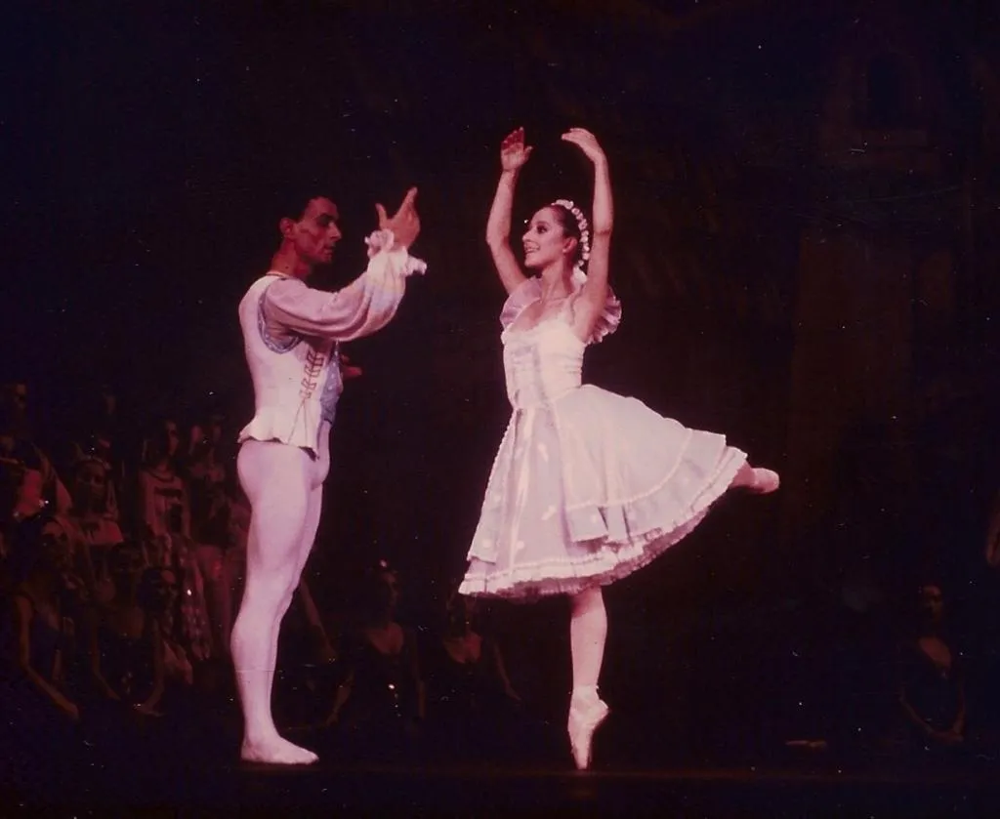

Primeira Bailarina do Ballet do Theatro Municipal do Rio de Janeiro.
Nasceu no Rio de Janeiro, onde começou desde criança seus estudos de Ballet.
Iniciou sua carreira profissional na França integrando o Ballet de Marseille, de Roland Petit.
Participou de Festivais em Lausanne, Veneza, Havana e na Gala Iberoamericana de La Danza, representando o Brasil em Madri.
Foi Bailarina Principal do Teatro Guaíra e da Associação de Ballet do RJ.
Em 1981, ingressou no Theatro Municipal do Rio de Janeiro já como Primeira Bailarina cargo em que permanece até hoje.

Entre seus muitos títulos, destacam-se o de Embaixadora da Cidade do Rio de Janeiro, o de Benemérito do Estado do Rio de Janeiro, Chevalier dans L’Ordre des Arts et des Lettres (Ministério da Cultura da França), o Troféu Mambembe-1998, a Ordem do Mérito Cultural (Ministério da Cultura-Brasil) na classe de “Comendador”, Medalha Pedro Ernesto e em 2021 tornou-se membro da academia Brasileira de Cultura, cadeira 44.
Como artista convidada dançou com importantes companhias tais como Saddler’s Wells Royal Ballet; Ballet Nacional de Cuba, Ballet da Ópera de Roma, Ballet de Santiago, Ballet Municipal de Assúncion entre outras.
Apresentou-se em quase todo o Brasil em produções próprias ou com o Ballet do Theatro Municipal do Rio de Janeiro e também convidada por outras importantes Companhias.
Levou também para diversas capitais brasileiras os espetáculos Ana Botafogo In Concert, Três Momentos do Amor, Suíte Floral, e Isto é Brasil.
Em 2011 comemorou seus 35 anos de carreira com o espetáculo Marguerite e Armand no Theatro Municipal do Rio de Janeiro.
Ana Botafogo ao longo de sua carreira apresentou-se em mais de 100 cidades brasileiras, incluindo DF, em 23 estados.
Nos palcos brasileiros e internacionais dançou os grandes papéis de mais de 30 repertórios clássicos do ballet mundial.
Apresentou-se ainda em vários países da Europa, Ásia e Américas do Norte, Central e do Sul.
No exterior fez apresentações em 33 cidades de 12 países tendo dançado com mais de 110 partners, brasileiros e estrangeiros, dentre os mais importantes nomes do cenário mundial, durante toda sua trajetória como bailarina.
Além de sua dança, ministra também, palestras e workshops com o intuito de estimular e levar aos jovens bailarinos os encantos dessa arte e profissão.
A divulgação e popularização da dança é uma preocupação constante de Ana Botafogo levando sua arte para os diversos cantos do Brasil.
Fontes e referências: anabotafogo.com.br